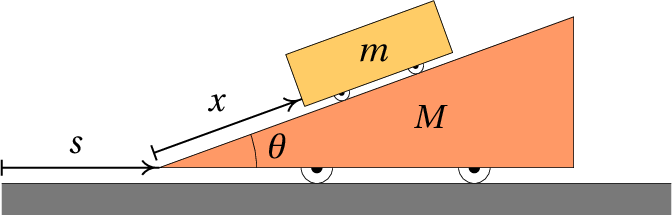
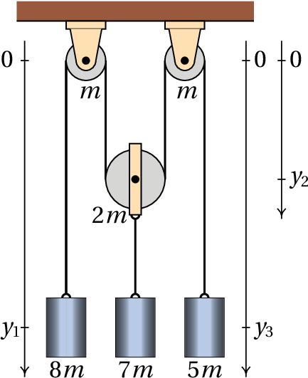
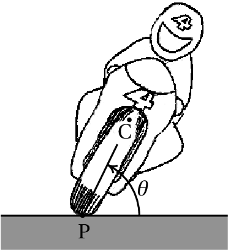
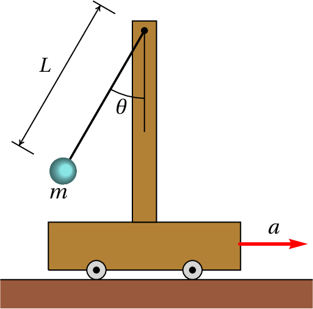
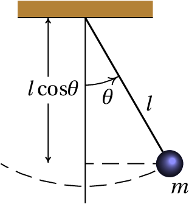
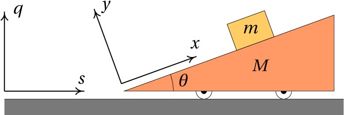

Cada braço num robot costuma ter 3 articulações. Em cada articulação há dois eixos perpendiculares, que permitem duas rotações independentes, correspondentes a dois graus de liberdade; assim sendo, cada braço tem 6 graus de liberdade, o suficiente para poder alcançar qualquer ponto dentro do seu alcance máximo, em qualquer direção desejada. O robot ATHLETE (All-Terrain Hex-Legged Extra-Terrestrial Explorer) na figura, usado pela NASA para exploração lunar, tem seis braços de 3 articulações e, incluindo os 3 graus de liberdade da posição de um ponto no corpo do robot, são ao tudo 39 graus de liberdade. O braço humano, sem incluir a mão, tem 7 graus de liberdade: o ombro permite 3 rotações diferentes, o cotovelo permite duas rotações diferentes e o pulso mais duas rotações.
Os sistemas mecânicos considerados no capítulo anterior têm todos um único grau de liberdade (uma coordenada ou ângulo para determinar a posição) e duas variáveis de estado: a variável associada a esse grau de liberdade e a sua derivada em ordem ao tempo (velocidade ou velocidade angular).
Num sistema com graus de liberdade, existem variáveis independentes dependentes do tempo, chamadas coordenadas generalizadas, que serão identificadas pelas letras: , , …, . Essas variáveis podem ser comprimentos, ângulos ou qualquer outra grandeza. As derivadas em ordem ao tempo de cada uma dessas variáveis são as velocidades generalizadas: .
O espaço de fase tem dimensões e cada ponto nesse espaço tem coordenadas ( , …, , , …, ). A velocidade de fase, em cada ponto do espaço de fase, tem componentes, ( , …, , , …, ). Para se poder calcular a velocidade de fase em qualquer ponto do espaço de fase é necessário conhecer expressões para as acelerações generalizadas , em função das coordenadas e velocidades generalizadas, expressões essas que são denominadas equações de movimento.
As equações de movimento poderiam ser obtidas aplicando a segunda lei de Newton. No entanto, seria necessário relacionar cada aceleração generalizada com a aceleração do centro de massa de alguma parte do sistema e identificar todas as forças externas que atuam sobre essa parte do sistema. Algumas de essas forças são forças de ligação, por exemplo, a tensão num fio ou a reação normal numa superfície. No capítulo anterior viu-se que as equações de evolução podem ser obtidas também derivando a função hamiltoniana. O problema é que, em casos mais complicados dos que foram considerados no capítulo anterior, essa função não é a energia mecânica dividida pela massa ou pelo momento de inércia, mas pode ter formas mais complicadas. Nas secções seguintes introduz-se um método mais geral para obter as equações de movimento sem necessidade de identificar forças de ligação.
A energia cinética total de um sistema mecânico é igual à soma de todas as energias cinéticas de translação e de rotação de todas as partes do sistema. Em geral, é uma função que pode depender de todas as coordenadas e velocidades generalizadas e do tempo:
Num sistema em que o movimento está sujeito a algumas restrições existem forças de ligação resultantes dessas restrições. Por exemplo, num automóvel que se desloca sobre uma estrada, a reação normal da estrada sobre os pneus é a força de ligação que garante que a trajetória do automóvel siga a superfície da estrada. O atrito estático nas rodas com tração é também uma força de ligação, que garante que as rodas rodem sem deslizar sobre a superfície. A restrição de que o automóvel se desloque sobre a superfície da estrada permite reduzir as três coordenadas de posição a um único grau de liberdade: o deslocamento ao longo da estrada. A restrição de as rodas rodarem sem derrapar permite relacionar a velocidade angular das rodas com a velocidade do automóvel na estrada. Essa relação implica também uma relação entre o ângulo de rotação das rodas e o deslocamento do automóvel na estrada, o que faz com que apenas umas dessas duas variáveis seja suficiente para descrever o movimento do automóvel e a rotação das rodas.
Sempre que uma restrição no movimento de um sistema pode ser escrita em função das coordenadas generalizadas do sistema, permitindo assim reduzir o números de graus de liberdade, diz-se que é uma restrição holonómica. Nos sistemas holonómicos, sujeitos unicamente a restrições holonómicas, a segunda lei de Newton conduz às seguintes equações (a demonstração é feita no apêndice B):
onde é a componente da força generalizada, definida por
e a soma é feita sobre todas as forças (internas ou externas) e é a posição do ponto onde atua a força . No entanto, não é necessário considerar algumas das forças no cálculo de ; por exemplo, as forças de reação normal e de atrito estático podem ser ignoradas, porque atuam numa posição fixa e, portanto, . A força de tensão num fio com comprimento constante também pode ser ignorada, porque atua em sentidos opostos nos dois extremos do fio e a soma de nos dois extremos dá zero.
Entre as forças que devem ser incluídas em , algumas podem ser conservativas e, nesses casos, , onde é a energia potencial associada a essa força. Assim sendo, a contribuição dessa força conservativa para é igual a e as equações 8.2 podem ser escritas
em que é a energia potencial total do sistema e as componentes da força generalizada incluem unicamente as forças não conservativas. As equações 8.4 são as equações de Lagrange, válidas para os sistemas holonómicos. No caso particular de sistemas conservativos, o lado direito das equações é nulo.
O carrinho na figura, com massa , encontra-se sobre o plano inclinado de massa . O plano inclinado tem rodas que lhe permitem deslocar-se livremente sobre a mesa horizontal. Admitindo que a massa das rodas é muito menor que e e que o atrito no eixo das rodas é desprezável, encontre as equações de movimento do sistema.
Resolução. Para determinar as posições do carrinho e do plano inclinado num instante, basta saber o deslocamento horizontal de um ponto do plano, em relação à mesa e o deslocamento de um ponto do carrinho em relação ao plano inclinado. A figura acima mostra a forma como essas duas variáveis podem ser definidas. Assim sendo, o sistema tem dois graus de liberdade e as velocidades generalizadas são e .
A velocidade generalizada é também a velocidade do centro de massa do plano inclinado; é a velocidade do carrinho em relação a plano inclinado. Escolhendo um eixo perpendicular a e apontando para cima, a forma vetorial da velocidade do plano inclinado e da velocidade do carrinho em relação ao plano são:
A velocidade do carrinho, em relação à mesa, é igual à soma desses dois vetores:
e o seu módulo ao quadrado é,
Como a energia cinética de rotação das rodas é desprezável, a energia cinética total do sistema é:
A energia potencial gravítica do plano inclinado pode ser ignorada porque permanece constante; como tal, a energia potencial do sistema é igual à energia potencial gravítica do carrinho:
note-se que a altura do centro de massa do carrinho, em relação à mesa, é um pouco maior que , mas a diferença é uma constante que só acrescenta um valor constante a , podendo ser ignorado.
Não existem forças não conservativas (ou melhor, estão a ser ignoradas); como tal, o lado direito nas equações de Lagrange 8.4 é zero. Na primeira equação de Lagrange, relacionada com a coordenada é necessário calcular as seguintes derivadas parciais:
e a equação de Lagrange é,
Em relação à coordenada , as derivadas parciais são
e a equação de Lagrange é
Resolvendo as duas equações de Lagrange para as acelerações e , obtêm-se as duas equações de movimento:
As duas acelerações são constantes, negativa e positiva; ou seja, o carrinho desce o plano inclinado enquanto este começa a andar para a direita.
No sistema da figura, a roldana do meio pode subir e descer e as outras duas roldanas estão fixas ao teto. As massas das duas roldanas fixas é , a massa da roldana móvel é e as massas dos 3 cilindros são , e (no cilindro do meio, já inclui também a massa do suporte que o liga à roldana móvel). As massas dos fios e o atrito nos eixos das roldanas são desprezáveis e o fio faz rodar as roldanas sem deslizar sobre elas. Determine o valor das acelerações dos 3 cilindros.
Resolução. Este exemplo será usado também para mostrar o uso do Maxima na resolução de problemas de mecânica lagrangiana. Começa-se por definir as variáveis generalizadas. Para determinar a posição dos cilindros e da roldana móvel são necessárias 3 distâncias, que podem ser as três variáveis , e indicadas na figura. As variáveis e são as posições dos centros de massa dos dois cilindros nos extremos e é a posição do centro da roldana móvel; a posição do cilindro do meio é igual a mais uma constante.
A restrição de que o comprimento do fio seja constante conduz à seguinte equação:
onde é uma constante. Essa equação permite substituir em função de e ; como tal, o sistema tem dois graus de liberdade e as coordenadas generalizadas podem ser e . As velocidades generalizadas são e ; a relação entre a velocidade e as duas velocidades generalizadas obtém-se derivando a equação anterior, que neste caso é trivial, mas como em outros casos podem não ser, será calculada aqui usando o Maxima. As derivadas calculadas pela função diff são derivadas parciais; para obter a derivada ordinária da equação anterior em ordem ao tempo, é necessário indica que a derivada de é a velocidade generalizada e de forma semelhante para . Já agora podem indicar-se também as derivadas de e , que são as acelerações e . O comando usado no Maxima para indicar a derivada de uma variável é gradef. Os comandos para definir e em função das variáveis generalizadas são
Como o fio não derrapa sobre as roldanas, a velocidade angular de cada roldana é , onde é a velocidade do fio em relação ao centro da roldana e é o raio da roldana. Admitindo que cada roldana seja um cilindro uniforme, o seu momento de inércia em relação ao eixo é , onde é a massa da roldana; assim sendo, a sua energia cinética de rotação é
A energia cinética total do sistema é:
onde os índices 1, 2 e 3 referem-se aos 3 cilindros e às 3 roldanas (de esquerda para direita), as massas , em letras minúsculas, são as massas dos cilindros e as massas , em letras maiúsculas, as massas das roldanas. As velocidades são as velocidades dos 3 cilindros e as velocidades são as velocidades do fio em relação ao centro de cada uma das 3 roldanas. Observe-se que a roldana 2 tem tanto energia cinética de translação como energia cinética de rotação.
A expressão da energia potencial gravítica do sistema, excluindo termos constantes, é:
A seguir, substituem-se os valores das massas em termos do parâmetro e escrevem-se as expressões das energias em ordem a , e as velocidades e (observe-se que , e . Isso pode ser feito no Maxima da forma seguinte:
E as duas equações de Lagrange são
Finalmente, resolvem-se as duas equações de Lagrange para encontrar as acelerações e e usam-se esses resultados para determinar a aceleração
Note-se que os resultados não dependem do valor de e as três acelerações são constantes. O cilindro do lado esquerdo tem aceleração igual a , para baixo (porque é positiva). O cilindro do meio e a roldana móvel têm aceleração , para cima. E a aceleração do terceiro cilindro é , para cima. Se inicialmente os 3 cilindros estão em repouso, o cilindro do lado esquerdo começa a descer e os outros dois cilindros sobem.
Nos dois exemplos resolvidos na secção anterior, os valores obtidos para as acelerações generalizadas foram constantes. Nos casos mais gerais, essas acelerações serão expressões que dependem das coordenadas e velocidades generalizadas e do tempo. A resolução desses sistemas de equações diferenciais é o objeto de estudo de todos os seguintes capítulos neste livro.
Antes de resolver as equações de movimento, é possível (e conveniente) começar por determinar os valores das coordenadas generalizadas para os quais o sistema estará em equilíbrio. A condição para que exista equilíbrio cinético é que as acelerações sejam nulas e se as velocidades também são nulas, o equilíbrio é estático.
Lembre-se que nos sistemas com apenas um grau de liberdade, a instabilidade dos pontos de equilíbrio determina-se a partir do sinal da derivada da aceleração, em ordem à coordenada generalizada. O ponto de equilíbrio é estável quando essa derivada é negativa ou instável quando for positiva.
Um motociclista que se desloca com velocidade , numa curva de raio , inclina o seu corpo e a moto um ângulo , em relação à horizontal, no sentido do centro de curvatura da curva, para evitar cair para o lado. Determine o valor que deve ter , em função de , e , que é a distância entre o ponto de contacto dos pneus com a estrada, P, e o centro de massa, C, do sistema.
Resolução. Devido à inclinação da moto, os pontos P e C não se encontram à mesma distância do centro da trajetória curva. Como a distância desde o ponto P até o centro da trajetória curva é e a velocidade de P em relação à estrada é , a distância desde o ponto C até o centro da trajetória curva é e a velocidade do ponto C é:
na mesma direção da velocidade do ponto P. Mas como o ângulo pode variar, o ponto C tem também outra componente de velocidade, , no plano perpendicular à velocidade de P. Como tal, a energia cinética de translação é
Há também energias cinéticas de rotação, associadas à velocidade angular , à velocidade angular das rodas nos seus eixos e à rotação do sistema todo no plano horizontal, já que o motociclista entra na curva olhando numa direção e sai olhando para outra direção diferente. O cálculo dessas energias ultrapassa os objetivos deste livro introdutório; será considerado o caso em que essas energias podem ser desprezadas. A energia potencial gravítica do sistema é
As derivadas parciais das energias, em ordem a e são
e a equação de movimento é
A altura do centro de massa, , costuma ser muito menor do que o raio da curva; assim sendo, a expressão entre parêntesis é aproximadamente 1 e uma boa aproximação é
Para que exista equilíbrio, e o ângulo deverá ser:
e a derivada da aceleração generalizada em ordem ao ângulo é:
que é positiva, porque . Conclui-se que o equilíbrio é instável.
Um carrinho desloca-se sobre uma mesa horizontal, com aceleração constante de valor . Sobre o carrinho há um poste com um pêndulo simples de massa e comprimento . Determine o valor do ângulo em que o pêndulo permanece em equilíbrio em relação ao carrinho. Admita que a massa do fio do pêndulo é desprezável e que o raio da esfera é muito menor que .
Resolução. A velocidade do carrinho será sempre horizontal e com módulo , onde é o tempo a partir do instante em que a velocidade do carrinho era nula. A figura à direita mostra a velocidade da esfera, em relação ao carrinho, no caso em que é positiva. O módulo de é igual a e usando um sistema de eixos com na direção e sentido de e na vertical e para cima, as componentes vetoriais de e da velocidade do carrinho são:
A velocidade da esfera em relação à mesa é a soma desses dois vetores
No Maxima, se for representada pela variável e pela variável , o vetor velocidade da esfera permite encontrar a expressão da energia cinética da esfera, lembrando que
A seguir, definem-se a energia potencial da esfera e as derivadas da coordenada e velocidade generalizadas em ordem ao tempo, encontra-se a equação de Laplace e resolve-se para obter a expressão para a aceleração angular que será designada pela variável .
Obtém-se assim a equação de movimento
Existe equilíbrio estático quando a velocidade e a aceleração angular são ambas nulas, , , que conduz à condição para o ângulo na posição de equilíbrio:
e a derivada da aceleração angular em ordem ao ângulo é
que é negativa, porque no ponto de equilíbrio está entre 0 e . Conclui-se que o equilíbrio é estável; o pêndulo pode oscilar em torno do ângulo de equilíbrio.
Observe-se que a equação de movimento depende da aceleração do carrinho mas não da sua velocidade. A observação da posição de equilíbrio do pêndulo permite medir o valor da aceleração do carrinho, mas não a sua velocidade.
Em todos os exemplos das secções anteriores não existiam forças não conservativas e, assim sendo, a força generalizada era nula. Os exemplos seguintes mostram casos em que existem forças não conservativas.
Um pêndulo simples é formado por um objeto pequeno de massa , pendurado de um fio de comprimento . A massa do fio é desprezável comparada com . Determine a equação de movimento, incluindo a resistência do ar.
Resolução. A força de resistência do ar é proporcional ao quadrado da velocidade do pêndulo, e na direção oposta a essa velocidade (ver equação 4.14 do capitulo 4). Como a velocidade do pêndulo é igual a , a expressão para a força de resistência do ar é:
onde C é uma constante. Fixando a origem no ponto onde o fio está colado, a posição do ponto onde atua essa força é
e a sua derivada em ordem a é
onde é o versor tangente à trajetória circular do pêndulo, no sentido em que aumenta. A força generalizada é
As energias cinética e potencial e as suas derivadas são semelhantes às do último exemplo da secção anterior, substituindo
A equação de Lagrange conduz a
Uma das vantagens da mecânica lagrangiana, em relação à mecânica vetorial, é não ter que identificar as forças de ligação, as suas direções e os pontos onde são aplicadas. No entanto, em alguns casos pode ser necessário ter de calcular essas forças. Por exemplo, quando existe atrito cinético entre duas superfícies, a força de atrito é proporcional à força de reação normal, que é uma de forças de ligação.
Existe um método que permite calcular as forças de ligação a partir das equações de Lagrange. Começa-se por identificar a restrição à qual está associada a força de ligação e escreve-se na forma . No caso do exemplo 8.2, a restrição de que o comprimento do fio é constante, , é responsável pela aparição da força de tensão ao longo do fio e faz com que possa ser substituída em termos de e . Assim sendo, para calcular a tensão no fio, faz-se de conta que as 3 variáveis ( , , ) são todas coordenadas generalizadas, aumentando o número de equações de Lagrange para 3, introduz-se uma função , chamada multiplicador de Lagrange e uma condição adicional, constante, que no caso do exemplo 8.2 é .
O passo seguinte consiste em acrescentar um termo a cada equação de Lagrange, ficando
onde . O exemplo seguinte mostra como calcular o multiplicador de Lagrange. Cada termo é a componente da força de ligação segundo . No caso do exemplo 8.2, , e são os valores da tensão do fio sobre cada um dos 3 blocos, que são diferentes.
Um bloco de massa escorrega sobre um plano inclinado de massa que tem rodas que lhe permitem deslocar-se livremente sobre uma mesa horizontal, como mostra a figura. O coeficiente de atrito cinético entre o bloco e o plano inclinado é . Admitindo que a massa das rodas é muito menor que e e que o atrito no eixo das rodas é desprezável, encontre as equações de movimento do sistema.
Resolução. Na figura acima já foram indicados também os dois sistemas de eixos usados a seguir; os eixos e estão fixos à mesa e os eixos e deslocam-se com o plano inclinado.
Este exemplo é semelhante ao exemplo 8.1, mas com uma força não conservativa: atrito cinético entre o bloco e o plano inclinado. Como a força de atrito cinético é igual a , onde é a reação normal entre o bloco e o plano, é necessário calcular essa reação normal. É necessário então fazer de conta que o bloco não mantém o contacto com o plano inclinado e que as duas coordenadas e podem variar. Nesse caso existem assim 3 graus de liberdade: , e e a equação da restrição que faz com que o bloco esteja sempre em contacto com o plano inclinado é:
Introduz-se um multiplicador de Lagrange e as 3 componentes generalizadas da força de ligação são:
Isso mostra que a força de ligação aponta na direção do eixo e o multiplicador de Lagrange é a própria reação normal entre o bloco e o plano.
Para determinar as componentes das velocidades em função das velocidades generalizadas ( , , ), mostra-se a seguir um método diferente do que foi usado na resolução do exemplo 8.1. O vetor posição do centro de massa do plano inclinado é
e a sua derivada é o vetor velocidade do plano inclinado: .
A posição do bloco em relação ao centro de massa do plano inclinado é
onde é o vetor desde o centro de massa do plano inclinado até a origem do referencial . A posição do bloco em relação à mesa é ; como os versores do referencial , em relação ao referencial , são
então a posição do bloco no referencial é
e derivando obtém-se a velocidade do bloco
Como a energia cinética de rotação das rodas é desprezável, a energia cinética total do sistema é:
A altura do bloco, em relação à mesa é
e, ignorando os termos constantes, a energia potencial gravítica do sistema é
Neste caso existe uma força interna que realiza trabalho: a força de atrito cinético entre o bloco e o plano inclinado. Para calcular as componentes da força generalizada há que ter em conta que na expressão o vetor é a posição do bloco em relação ao plano inclinado , porque a força é interna; usando a expressão dada acima para , as 3 derivadas parciais são , e . Como a força de atrito é , as três componentes da força generalizada são então
As equações de Lagrange 8.9 para as 3 coordenadas são
Estas 3 equações podem ser resolvidas para encontrar as 2 equações de movimento para e em função de ( , , , ) e a força de ligação . Para substituir , e em função das coordenadas e velocidade generalizadas ( , , , ) usa-se a equação da restrição, = constante, que neste caso é = constante e, portanto, . Eliminando os termos nas equações de Lagrange e resolvendo para , e obtém-se
onde . No caso em que o atrito cinético é desprezado ( ), é igual a e as equações de movimento são as mesmas que foram obtidas no exemplo 8.1.
(Para conferir a sua resposta, clique nela.)


Perguntas: 1. B. 2. E. 3. B. 4. C. 5. C.
Problemas
(clique para continuar)
A distância desde o centro de massa da barra até o ponto A é . O momento de inércia em relação a A calcula-se somando o momento de inércia em relação ao centro de massa, mais vezes a distância desde o centro de massa até A, ao quadrado (teorema dos eixos paralelos).
(clique para continuar)
A distância desde o centro de massa da barra até o ponto A é . O momento de inércia em relação a A calcula-se somando o momento de inércia em relação ao centro de massa, mais vezes a distância desde o centro de massa até A, ao quadrado (teorema dos eixos paralelos).
(clique para continuar)
A distância desde o centro de massa da barra até o ponto A é . O momento de inércia em relação a A calcula-se somando o momento de inércia em relação ao centro de massa, mais vezes a distância desde o centro de massa até A, ao quadrado (teorema dos eixos paralelos).
(clique para continuar)
O sistema tem um grado de liberdade: altura dum dos blocos, e uma velocidade: . Encontre a expressão da energia cinética total (dos dois blocos mais a energia de rotação da roldana), em função de , a expressão da energia potencial gravítica em função de (observe que as alturas dos blocos são e constante ) e aplique a equação de Lagrange para encontrar a aceleração .
(clique para continuar)
O sistema tem um grado de liberdade: altura dum dos blocos, e uma velocidade: . Encontre a expressão da energia cinética total (dos dois blocos mais a energia de rotação da roldana), em função de , a expressão da energia potencial gravítica em função de (observe que as alturas dos blocos são e constante ) e aplique a equação de Lagrange para encontrar a aceleração .
(clique para continuar)
O sistema tem um grado de liberdade: altura dum dos blocos, e uma velocidade: . Encontre a expressão da energia cinética total (dos dois blocos mais a energia de rotação da roldana), em função de , a expressão da energia potencial gravítica em função de (observe que as alturas dos blocos são e constante ) e aplique a equação de Lagrange para encontrar a aceleração .
(clique para continuar)
O sistema tem um grado de liberdade: altura dum dos blocos, e uma velocidade: . Encontre a expressão da energia cinética total (dos dois blocos mais a energia de rotação da roldana), em função de , a expressão da energia potencial gravítica em função de (observe que as alturas dos blocos são e constante ) e aplique a equação de Lagrange para encontrar a aceleração .
(clique para continuar)
(clique para continuar)
Para encontrar a equação de movimento para , usa-se a equação de Lagrange:
(clique para continuar)
(clique para continuar)
Para encontrar a equação de movimento para , usa-se a equação de Lagrange:
(clique para continuar)
Para encontrar a equação de movimento para , usa-se a equação de Lagrange:
(clique para continuar)
Para encontrar a equação de movimento para , usa-se a equação de Lagrange:
(clique para continuar)
Para encontrar a equação de movimento para , usa-se a equação de Lagrange:
(clique para continuar)
Para encontrar a equação de movimento para , usa-se a equação de Lagrange:
(clique para continuar)
(clique para continuar)
Para encontrar a equação de movimento para , usa-se a equação de Lagrange:
(clique para continuar)
Para encontrar a equação de movimento para , usa-se a equação de Lagrange:
(clique para continuar)
Para encontrar a equação de movimento para , usa-se a equação de Lagrange:
(clique para continuar)
Para encontrar a equação de movimento para , usa-se a equação de Lagrange:
(clique para continuar)
(clique para continuar)
Para encontrar a equação de movimento para , usa-se a equação de Lagrange:
(clique para continuar)
Para encontrar a equação de movimento para , usa-se a equação de Lagrange:
(clique para continuar)
A distância desde o centro de massa da barra até o ponto A é . O momento de inércia em relação a A calcula-se somando o momento de inércia em relação ao centro de massa, mais vezes a distância desde o centro de massa até A, ao quadrado (teorema dos eixos paralelos).
(clique para continuar)